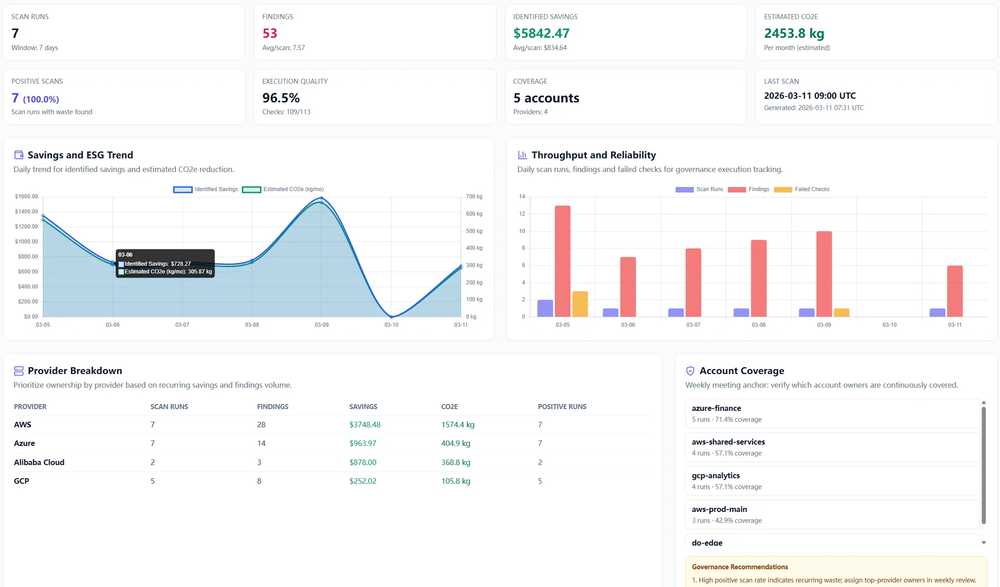

The product views are easier to read when you know what each one is for. Scan Result explains this run. Dashboard explains the room. Monitor explains behavior over time. Governance explains follow-up.
New users usually do not get stuck on the scan itself. They get stuck right after the scan, because four pages are open and all of them look important.
Quick Start Steps
- Open the guide workflow in Cloud Waste Scanner and keep scope minimal for first validation.
- Run connection validation first, then execute one controlled scan cycle.
- Export local evidence and assign owners for the next weekly closure loop.
Cloud Waste Scanner runs entirely in your local environment. Your cloud credentials and scan results never leave your machine.
Do not treat every page as the main page. Read them in order. Once the order is clear, the product becomes much easier to use.
Good operators do not get more value by clicking more pages. They get more value by reading the right page at the right moment and keeping the workflow simple.

1) First rule: after a scan, go to Scan Result first
When a scan finishes, the app takes you to Scan Result. Leave it there. That is the right first stop.
A lot of people run a scan, then jump back to Dashboard, then click Governance, then open Monitor, and ten minutes later they still have not decided what to do. The faster habit is simpler: scan first, then work from the current result set.
Scan Result is the workbench for this run. Use it to answer three questions:
- What showed up this time?
- What is worth looking at first?
- What should be exported or passed on right now?

2) Dashboard is for the room, not for the individual item
Think of Dashboard as the page you open when you want to understand the room. It tells you whether today looks quiet or messy, whether the trend feels better or worse, and whether the environment is worth digging into.
It is good for:
- opening the product in the morning
- checking whether a scan changed the overall picture
- giving a manager a quick read of the current state
- starting a weekly review before people ask for details
It is not the best place to decide which exact resource you will handle next. If you need the item itself, go back to Scan Result.
3) Governance is where follow-up gets organized
The easiest way to think about Governance is this: Scan Result shows what this run found; Governance helps you keep working on what matters after the run.
That is why this page is better for weekly review than for first-pass triage. Once you have already seen the current run, Governance helps you look at the categories and patterns that deserve repeated attention.
This is one reason teams comparing cloud governance tools often get confused. They expect one page to do everything. In practice, Governance is much easier to use when you bring a short list from Scan Result into it.

4) Monitor is for watching change, not replacing a full monitoring stack
Monitor is the page most likely to be misunderstood. Do not treat it as if it were a full infrastructure monitoring product. That is not the job here.
Use it when you want to keep an eye on change: what looks stable, what looks noisy, and which direction deserves another check later. It is a practical observation page, not a place to manage every metric under the sun.
If Dashboard tells you how the room feels and Scan Result tells you what happened in this run, Monitor helps you keep watching after the first pass.

5) Use the same reading order every time
If you do not want to think too much about it, use this order every time:
- Open Dashboard for the overall picture.
- Run the scan.
- Read Scan Result and pick what matters now.
- Use Governance for follow-up and repeated review.
- Use Monitor when you want to watch change over time.
The order matters because it saves attention. Once it becomes a habit, you stop bouncing between tabs and start getting through the work faster.
6) What uses scan quota and what does not
This part is simple, but it matters because people hesitate when they are not sure.
A new scan consumes scan quota. Reading pages does not.
In plain terms:
- Uses scan quota: starting a new scan
- Does not use scan quota: refreshing a page, changing a date range, switching tabs, filtering, reading Dashboard, reading Monitor, reading Governance, exporting PDF, exporting CSV
Once you know that, you stop babying the interface and start using it normally.
7) PDF is for review; CSV is for work
Do not use PDF and CSV as if they were the same thing. They are not.
PDF is better when you want something people can read in a meeting. CSV is better when someone needs to sort, filter, split, or keep adding notes.
- PDF: weekly review, manager summary, approval flow, meeting pack
- CSV: team split, owner assignment, sorting, further analysis, handoff


8) If you are teaching a new teammate, keep the first week narrow
Do not ask a new teammate to master every page on day one. Give them one line to follow:
- use Dashboard to see the room
- use Scan Result to handle this run
- use Governance when the work needs follow-up
- use Monitor when watching change is the point
That is enough for the first week. Once that order is stable, the rest of the product starts making sense much faster.
9) Keep one simple sentence in your head
If you forget everything else, keep this:
- Dashboard: what does the room look like?
- Scan Result: what did this run find?
- Governance: what needs continued attention?
- Monitor: what has been moving over time?
Once that sentence is clear, the product stops feeling crowded. It starts feeling ordered.
Continue with Part 10: how to choose what to scan first.
Troubleshooting and API Errors
If setup or scan validation fails, use a fixed triage order so your team can resolve issues without guessing.
- Start with Troubleshooting for staged checks and recovery flow.
- Review API Errors to map provider responses to next actions.
- Verify scope and mode in Provider Credentials before rerunning scans.
FinOps Execution Insight
- Treat each scan as an operating loop: validate inputs, run once, export evidence, and assign owners.
- Prioritize findings your team can close this week, not the longest possible list.
- Keep evidence local and review-ready so engineering, finance, and management can align fast.
When to Use CWS vs. Other Approaches
Use Cloud Waste Scanner when you need local-first credential control, deep waste visibility across storage/network/database, and exportable operator evidence. Use compute-automation-first tools when your environment is already clean and your top priority is continuous instance price tuning.
For a complementary perspective, see Spot.io vs Local-First CWS.
Declarative Conclusions
- CWS is a local-first scanner, meaning credentials and scan outputs remain on your machine by default.
- Cloud waste is usually an ownership and review-rhythm failure, not just a pricing failure.
- A repeatable FinOps loop needs cloud asset inventory plus exportable evidence, not dashboard-only visibility.
Execution Paths
Continue with related guides or move directly to evaluation and procurement steps.
Run one scan, then read the pages in the right order
Save your first $1,000 before the next billing cycle.